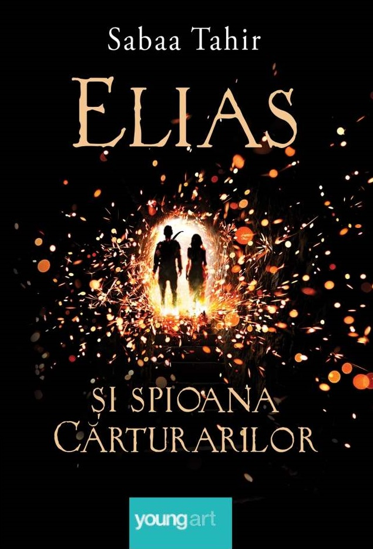
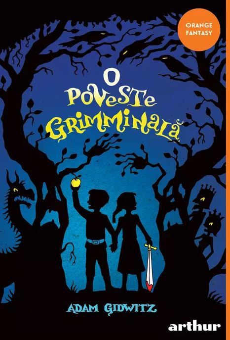

")

|
Sensibila si inteligenta, ea a supravietuit ani in sir, singura, in pustietatea mlastinii, casa ei, gasind prieteni printre pescarusi si lectii de viata printre nisipuri. Si a venit vremea cand ea tanjeste dupa apropierea semenilor, dupa dragoste. Cand doi tineri din oras se lasa atrasi de frumusetea salbatica a fetei, Kya se simte tentata de perspectiva unei vieti noi, fara macar sa se gandeasca la ce-ar putea sa-i aduca viitorul. |
|  |
Elias este cel mai bun soldat al Academiei militare a Imperiului – si, in secret, cel care isi doreste cel mai putin sa se afle acolo. Aflat pe punctul de a dezerta, se vede obligat sa participe la o competitie nemiloasa al carei castigator va fi desemnat imparat. Laia face parte din clanul Carturarilor, inrobit de multi ani de catre Razboinici. Cand fratele ei este arestat sub acuzatia de tradare, Laia ia legatura cu miscarea de rezistenta impotriva asupritorilor, in speranta ca ii vor elibera fratele. In schimbul ajutorului, rebelii ii cer sa se strecoare in Academie si sa spioneze pentru ei. Cand Elias si Laia se intalnesc, isi vor da seama ca legatura dintre ei este mult mai puternica decat ar fi crezut vreodata si ca soarta Imperiului se afla in mainile lor. Destinele li se incruciseaza intr-o poveste care se citeste cu sufletul la gura, despre curaj, iubire, loialitate si libertate, intr-o lume in care totul le este potrivnic. |
|  |
O poveste grimminală este o alternativă îndrăzneaţă la basmele clasice, în care cei doi fraţi înfruntă mai multe personaje malefice, de la diavol la un dragon uriaş, ba chiar şi Luna de pe cer, căreia se pare că-i place să mănânce copilaşi. |

|
A fost odata ca niciodata; ca de n-ar fi, nu s-ar mai povesti; de cand facea plopaorul pere ai rachita micsunele; de cand se bateau urtii in coade; de cand se luau de gat lupii cu mieii de se sarutau, infratindu-se; de cand se potcovea puricele la un picior cu nouazeci si noua de oca de fier si s-arunca in slava cerului de ne aducea povesti; |

|
Hazel Grace Lancaster este un adolescent de 16 ani cu cancer terminal. Știe că moare în timp ce își petrece viața atașată la un rezervor de oxigen și supusă unor tratamente constante, care o determină să intre într-o depresie. Pentru a o încuraja, părinții ei îi recomandă să participe la un grup de sprijin. |